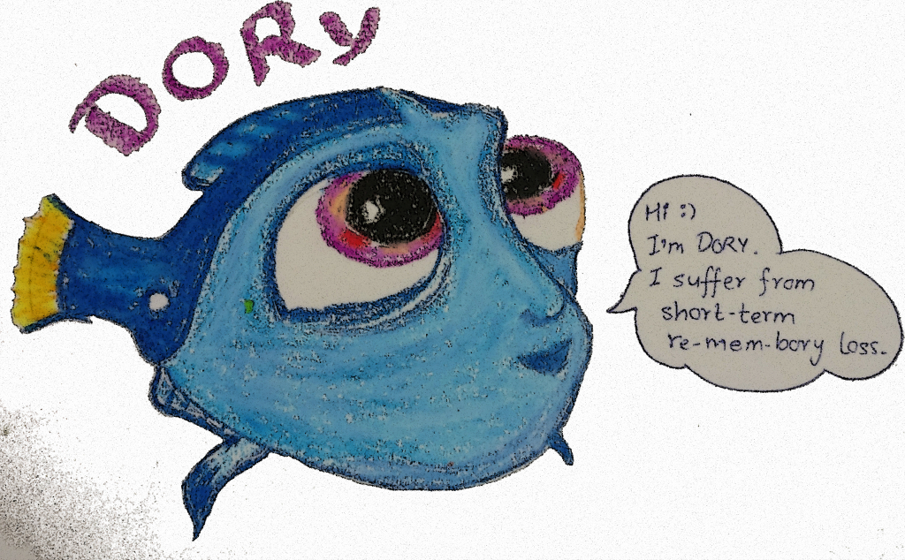

this is
Dory
,
the fish you can tell anything to share secrets, cuz it'll forget after a while
Currently this is a work in progress.
Building it in
Gin
.

Reach out to us on developer channel for more details.